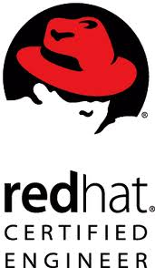

Curriculum Vitae
ARUN
NADH.G
ARUNNIVAS
BHOOTHAKULAM P.O , KoLLAM , KERALA
Mobile: +91- 9995855595 9947252354
Email: nadh2007@gmail.com
OBJECTIVE
To
be a part of the challenging team which strives for the better growth
of the
organization and which explores my potential and provides
me with the opportunity
to enhance my talent with an intention
to be an asset to the company
PROFESSIONAL EXPERIENCE
Having 15+ years plus experience in Networking, Cloud, Linux and Windows server Administration.
Experienced in managing and troubleshooting of WAN, MAN Issue.
Provides complete IT support, including planning, software and hardware configuration, network design etc.
Installs, maintains and troubleshoots OS, configures IP addresses, DNS Server, Mail Server, Proxy Server, Web Server, Windows/Linux Server configurations etc.
Proficient in AWS, Azure, and Google cloud technologies.
Experienced in monthly report managements verifying the incidents tickets for keeping the teams work quality, if the necessary will provide the training to team members in the trouble shooting steps of the incidents.
Performs backups of websites and database using different backup mechanisms.
Experienced in database support and Network monitoring.
TECHNICAL SKILLS
Operating Systems : Windows 10, windows 11, Windows Server 2003, 2008, 2016,2019 and 2022,Red-hat Linux, CentOS,Ubuntu, Debian Etc
Database : MySQL Server, SQL Server , PostgreSQL , MongoDB etc
Virtualization : Vmware, Proxmox, Hyper V etc
CERTIFICATIONS
RHCE
and RHCSA from REDHAT
MCITP Enterprise Administrator from
MICROSOFT
AWS Cloud Practitioner
AWS
Certified Solutions Architect - Associate
CERTIFIED
ETHICAL HACKER(CEH)
WORKING EXPERIENCE
Date : Since May 2008 to till the date
Company : Center for Development of Imaging Technology (CDIT)
Designation : System Administrator
Work Location : THIRUVANANTHAPURAM
Responsibilities:
Installs, maintains and troubleshoots various Operating Systems, configures IP addresses, DNS Servers, Mail Servers, Proxy Servers, Web Servers, VPN Servers etc.
Experienced in monitoring administration configuration and troubleshooting of various WAN and LAN Network Components and Devices.
Ensure planned and efficient server support.
Monitoring and Trouble shooting of Windows Servers 2016, 2019, 2022, Linux servers ,VMware servers ,Database servers etc.
Experienced in monthly Microsoft Hot fixes and Security Updates for all Microsoft Servers.
Trouble shooting of alerts based on criticality for the maximum resolutions by keeping quality of work and escalating to next level in need of higher end trouble shooting.
Creating and pointing of domains using DNS Servers(kerala.gov.in).
Configuring AWS DevOps projects for various government departments.
Hosting and maintenance of Websites and Databases.
Maintaining
and managing all the Systems, Servers and Network inside office.
Technical Proficiency
SERVER
CONFIGURATION LINUX BASED
1. Web Server Configuration
2. Dns Server Configuration
3. Dhcp Server Configuration
4. Mail Server Configuration
5. Samba Server
6. Proxy Servers (Squid)
7. Server monitoring using Grafana and Prometheus.
8. IP tables/Firewall Management
9. User Management
10. Logical Volume Management(LVM)
11.GIT+JENKINS
12.CI/CD
13. Experience in managing Docker and Kubernets
Setups
14. Experience in C panel(WHM),Cent Panel,Cyber Panel @ BSD Control Panels
SERVER CONFIGURATION WINDOWS BASED
1.
Web Server(IIS 7)
2. Active Directory Management(AD)
3. RIS Server Management
4. VPN Server Management
5. Terminal Server Management
6. Exchange Server Management
7. DHCP Server Management
DATABASE
1.
MySQL Server
2. PostgreSQL Server
3. MongoDB
4.
SQL Server
1. Vmware
2.
Hyper-V in Windows servers
3. Proxmox
CLOUD EXPERIENCE
1.AWS
2.GCP
3.AZURE
NETWORKING
1. LAN WAN networks management
2. Complete understanding of TCP/IP,UDP
3. Network Troubleshooting and Monitoring
4.
Basic Cisco Switch and router maintenance
5.
Experience in managing SOPHOS firewall configurations
PROGRAMMING/SCRIPTING
1. Intermediate level in programming C,C++
2.
Good Knowledge in PHP
3. Knowledge in BASH scripting
EDUCATIONAL PROFILE
BE – Computer Science & Engineering from Indian Engineering College (2007)-63%
Plus 2 Science from GHSS Bhoothakulam(2002)
SSLC from GHSS Bhoothakulam (2000) -72%
PERSONAL PROFILE
Father’s Name : Mr.K.Gopinadhan Nair
Permanent Address : “Arunnivas”, Bhoothakulam P.O
Kollam,
Kerala.-691302.
Phone: 0474-2514734 / +91-9947252354
Nationality : Indian
Date of Birth : 29-05-1985
Passport No : R7262309 Valid up to – 26/12/2027
Language Proficiency : English, Hindi, Malayalam & Tamil.
Strengths : Keen to learn, Determined, Flexible, Confident.
Place : Kollam
Date : 24/9/2023 (Arunnadh)
Arunnadh.G Pages: